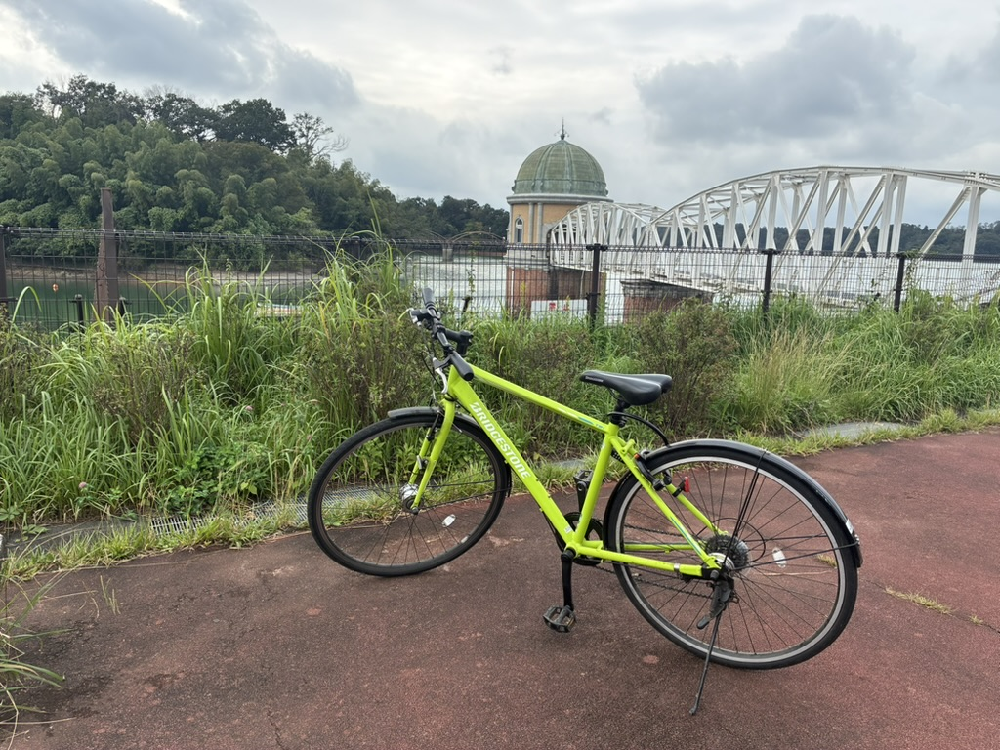
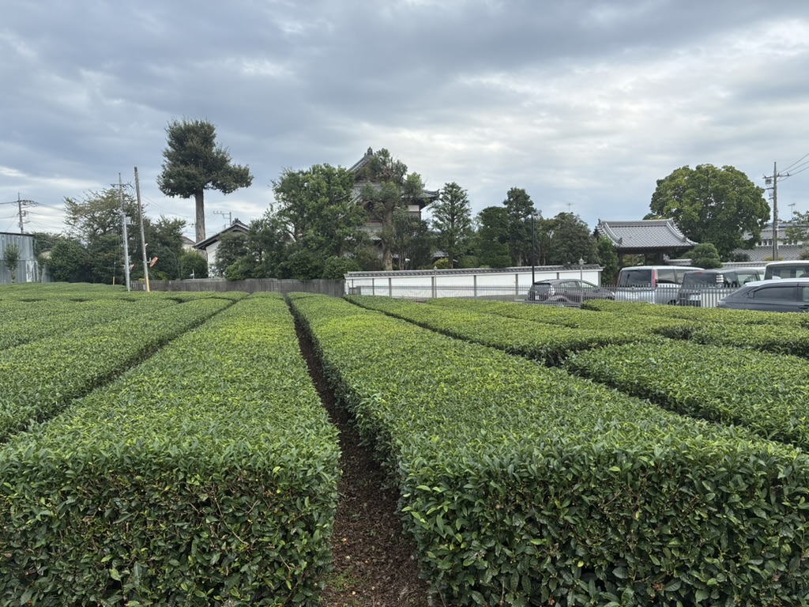
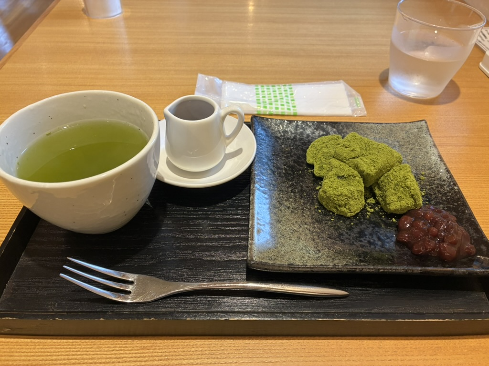

The Tokyo Bike Ride Nobody's Doing Yet: A Loop Around Lake Tama
Most of the tours I run started as something I was already doing for myself — a plot of farmland, a neighborhood ramen counter, a shrine I kept walking past. This one is the newest of that pattern. I took a half-day off work, pulled an old cross bike out of storage, and rode a full loop around Lake Tama (officially the Murayama Reservoir) in Tokyo's far western suburbs. Ninety minutes later I was fairly sure I'd just test-ridden a tour that doesn't exist yet.
Lake Tama sits in Higashiyamato and Tokorozawa, about 45 minutes from central Tokyo by train, and it barely registers on a first-time visitor's map. That's the appeal. No queues, no crowd management, just a paved perimeter path, water on one side and the green wall of the Sayama Hills on the other — the same hills, locals will tell you, that inspired parts of a certain Studio Ghibli film.
Japan's most beautiful intake tower
The structural star of the loop shows up before you expect it: the Lake Tama No.1 Intake Tower, completed in 1925. It's an odd, lovely thing to find on a reservoir — a domed roof, arched windows, tiled walls, and a white truss bridge connecting it to the shore for maintenance access. It's earned the nickname "Japan's most beautiful intake tower," and after seeing it in person, mid-pedal, with the lake stretched out behind it, I'm not going to argue.

A dome, a tea shop, and 250 years of leaves
Keep riding and the Seibu Dome appears across the water, an odd bit of modern silhouette against all that green. The Sayama Hills stay with you for most of the route — this is Sayama tea country, one of Japan's three major tea-growing regions, and the loop runs straight past the fields that prove it. About two-thirds of the way around, a noren curtain reading "founded in Anei 9" (1780) marks Koemon Tea Shop, a working tea house that's been pouring Sayama sencha since well before Japan had bicycles at all.

I stopped at the tea shop, sat down surrounded by the bushes that grew my cup, and didn't rush it — matcha and a small plate of wagashi, the kind of break you don't usually build into a bike ride.

Why I think this becomes a tour
I've learned to recognize the feeling by now — it's the same one I had standing in a Kiyose vegetable patch or ducking into a Shiinamachi ramen shop lined with manga artists' sketches. A route where the scenery does the work for you, where the difficulty is genuinely approachable (the full loop is flat and takes about 90 minutes to two hours at an easy pace; a half-loop works fine for anyone who'd rather not do the whole thing), and where almost nobody else is doing it. Lake Tama checks every box: a landmark most guidebooks skip, a 300-year-old tea house that's still pouring, hills with a Ghibli connection, and a route easy enough that you don't need to be a serious cyclist to enjoy it.
I'm registering it now as a new Hidden Tokyo Experiences route — a guided half-day loop with a rental bike, the intake tower, the tea break at Koemon, and the Sayama Hills backdrop the whole way. It's currently in testing and not yet bookable, but if a quiet, scenic cycling route on Tokyo's western edge sounds like your kind of afternoon, tell me and I'll reach out the moment dates open.
A new route, fresh off the test ride
Lake Tama cycling loop — roughly 90 minutes, flat, beginner-friendly, with a tea break at a 1780 tea house. Currently in testing and not yet bookable — let us know you're interested and we'll reach out the moment dates open.
Interested? Let us know →Planning more of your Tokyo trip?
While this route gets its final details sorted, you can already book other Hidden Tokyo experiences, from the real Totoro forest to a working sake brewery.
Some links on this page are affiliate links — booking through them supports this site at no extra cost to you.